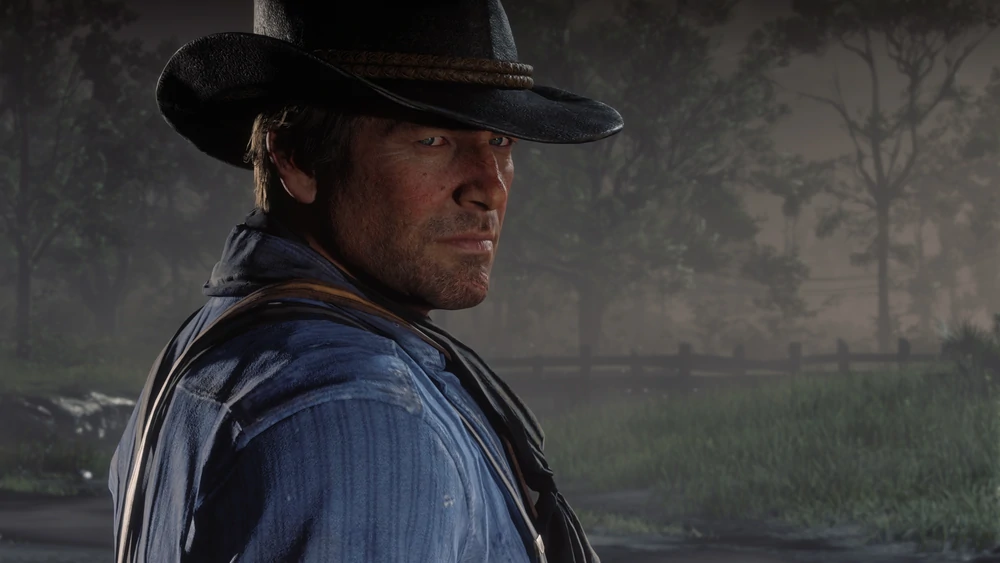

Arthur Morgan
Homme de main le plus expérimenté et le plus fiable de la bande, Arthur est hors-la-loi depuis l'enfance. Froid et impitoyable, il possède son propre sens de l'honneur. Un homme qui n'a pas peur de se salir les mains. C'est le personnage principal du jeu.
Histoire
Arthur Morgan naît en 1863 dans le nord des États-Unis, de deux parents d'origine galloise. Lorsqu'il est enfant, sa mère, Beatrice Morgan, meurt de cause inconnu, tandis que son père est un mauvais criminel et un hors-la-loi. En 1874, alors qu'il n'a que onze ans, son père, Lyle Morgan, est arrêté pour vol. Un peu plus tard, Arthur est témoin du meurtre de son père et, à la suite de cet évènement, il décide de porter son chapeau et de garder une photographie de lui, bien que leur relation n'était pas la meilleure. Vers 1877, Arthur est un délinquant et est arraché à la rue par Dutch van der Linde et Hosea Matthews. Voyant les deux hommes comme des figures paternelles, Arthur vient à partager la vision du monde de Dutch : vivre loin de la civilisation, des contraintes liées et des lois. Les deux hommes apprennent également au jeune Arthur à lire, écrire, chasser, combattre, tirer et chevaucher, devenant par la même occasion le premier protégé et l'un des premiers membres de la bande. Plus tard, Arthur trouve un chien, qu'il nomme Copper, avec lequel il grandit et devient particulièrement proche, prenant parfois des bains avec lui. Malgré quelques difficultés à le contrôler, il admire son chien. Plus tard, Copper décède et Arthur garde une photographie de lui. Après ça, il acquière une jument, qu'il nomme Boadicea, qu'il affectionne particulièrement et elle devient sa monture principale. Jeune adulte, Arthur rencontre une jeune femme du nom de Mary Gillis. Tous deux tombent fou amoureux de l'autre et commencent alors une relation. Il se lie d'amitié avec le frère cadet de cette dernière, Jamie à qui il apprend à faire du cheval. Cependant, la préférence d'Arthur pour la vie de criminel couplée à la désapprobation de la famille de Mary, notamment son père causent la destruction de leur couple et mènent à leur séparation. En 1884, Arthur est envoyé pêcher et rentre fièrement avec trois beaux crapets de roche. La bande célèbre alors ça en faisant un banquet et les grillent toute la nuit. La semaine suivante, Arthur et Dutch marchent dans un magasin local où il révèle qu'il a simplement acheté les carpets de roche à un marchant de poisson, cela l'embarrasse beaucoup. En 1885, il rencontre un jeune garçon de 12 ans qui se nomme John Marston qui a été sauvé par Dutch d'un groupe de colons Illinois qui le maltraitait. John rejoint le groupe de hors-la-loi et grandit aux côtés d'Arthur, tels des frères. Dutch leur enseigne son point de vue anarchiste du monde qui va à l'encontre du gouvernement corrompu et les prévient que la revanche est un jeu d'idiots. Avec les années, Arthur et John deviennent les "enfants" préférés de Dutch. En 1887, Arthur participe au premier gros braquage de banque de la bande avec Dutch et Hosea. A deux heure du matin, le trio débarquent dans la banque de Lee et Hoyt et volent pour pas loin de $5000 d'or. Après le braquage, ils s'attardent en ville, où ils se rendent dans des taudis, des parties pauvres de la ville et des orphelinats pour distribuer de l'argent, se prennant pour des "Robin des bois". Suite à ces événements, Arthur devient un homme recherché. Quelques années après, Arthur couche avec une jeune serveuse de 19 ans prénommée Eliza. Suite à ça, elle tombe enceinte et accouche d'un bébé qu'ils nomment Isaac. Eliza consciente de la vie d'Arthur, accepte tout de même qu'il les épaule, elle et son enfant. Arthur ne voulant rien promettre, afin de ne pas trahir sa parole, il le fait pour eux. Il se rend chez Eliza et Isaac de façon régulière, avec quelques mois d'écart entre chaque visite, et y reste quelques jours. Arthur se souvient d'Isaac en disant que c'est un bon enfant. Un jour, lors d'une de ses visites, il l'emmène à la pêche. Tragiquement, un jour, Arthur arrive au domicile d'Eliza et découvre deux cadavres devant la maison. Il sait instantanément que tous deux sont morts, et plus tard, il apprendra qu'ils ont été tués par deux voleurs pour $10. Cet incident traumatisant endurcit Arthur qui n'a jamais vraiment fait face à sa douleur et lui a fait comprendre que vivre une vie de hors-la-loi et espérer que des bonnes choses lui arrivent sont incompatibles. En 1894, une prostituée du nom d'Abigail Roberts rejoint la bande de Van der Linde. À un certain moment, elle tombe amoureuse de John et elle tombe enceinte de leur enfant, qu'ils nomment Jack. Arthur devient une sorte d'oncle de substitut pour lui lorsqu'il grandit. Cependant, John refuse d'accepter ses responsabilités envers le garçon et peu après, il quitte la bande. Environ un an plus tard, John revient, tandis que Dutch et le reste de la bande l'accueil à bras ouverts, Arthur se sentant trahi par ses actions et la brèche entre les deux se formant, et s'élargissant avec le temps.
Naissance - 1863
Statut - Décédé
Décès - 1899
Sexe - Masculin
Nationalité - Américaine
Occupation - Hors-la-loi
Rôles - Protagoniste
Anecdote La tombe d'Arthur est visitable par John en 1907 après la mission "Les petits plaisirs de la vie". Le niveau d'honneur d'Arthur au moment de sa mort a une incidence sur la tenue de sa tombe. Si son honneur est haut, sa tombe est propre et des fleurs sont déposées autour de celle-ci tandis que si son honneur est bas, sa tombe est délabrée et aucune fleur n'est disposée près de la tombe.